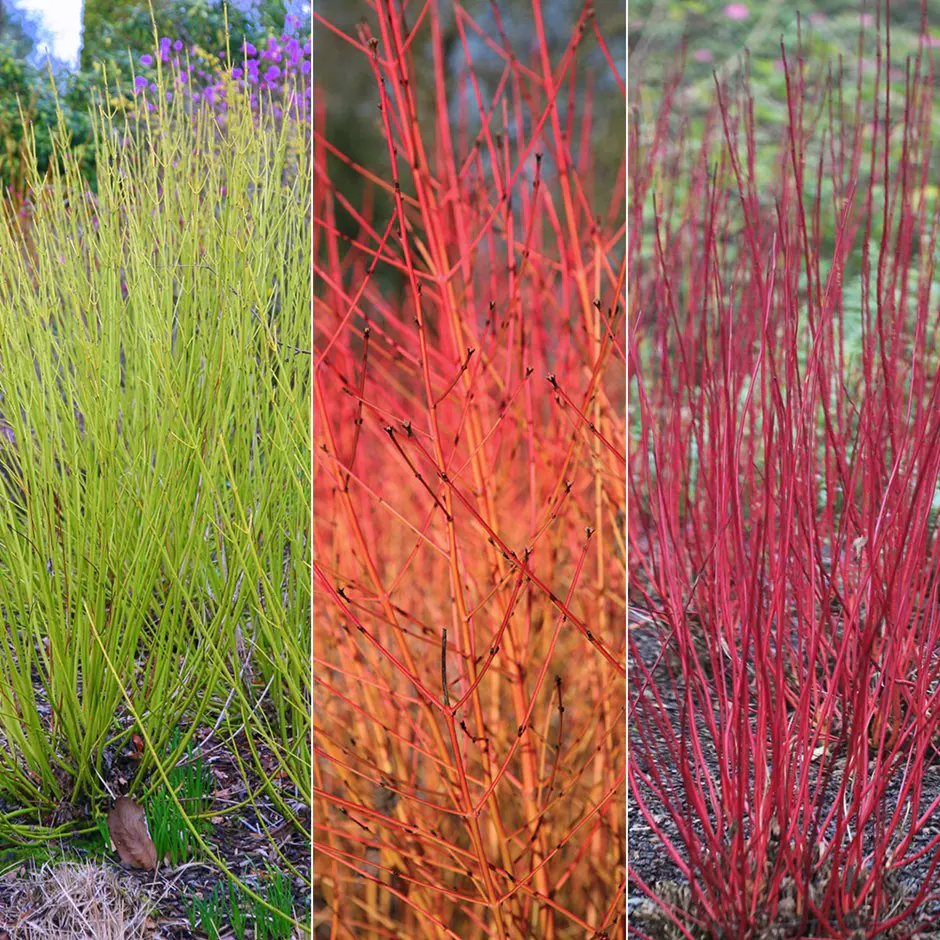
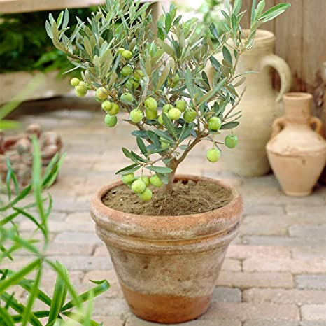
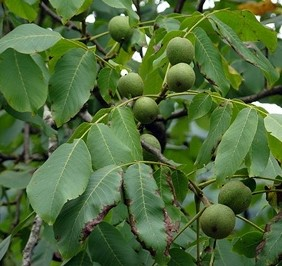
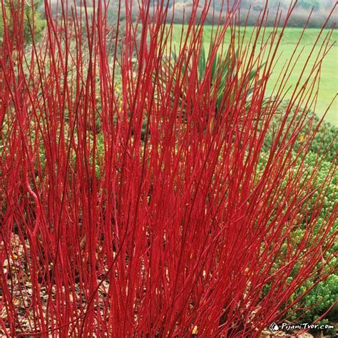
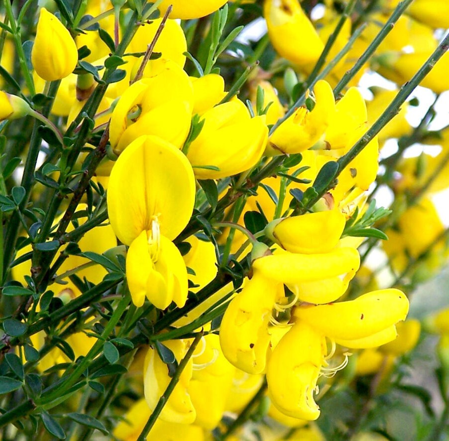

Trees / Hedges
Abbreviation
CN: Common NameBN: Botanical Name
| 1 | 2 | 3 | 4 | 5 |
| 1 | 2 | 3 | 4 | 5 |
| 1 | 2 | 3 | 4 | 5 |
| 1 | 2 | 3 | 4 | 5 |
| 1 | 2 | 3 | 4 | 5 |
| 1 |

CN: pear 'Conference', 西洋梨 BN: Pyrus communis 'Conference' RHS Gardenia Gardeners' World yougarden |

CN: apple 'Braeburn', 苹果 BN: Malus domestica 'Braeburn' RHS Gardenia Gardeners' World yougarden |

CN: Highbush Blueberry, 蓝莓 BN: Vaccinium corymbosum RHS Gardenia Gardeners' World yougarden |

CN: plum 'Victoria', 欧洲李 BN: Prunus domestica 'Victoria' RHS Gardenia Gardeners' World yougarden |
|

CN: dogwood, 山茱萸 BN: Cornus RHS Gardenia Gardeners' World |

CN: Atlas cedar,北非雪松 BN: Cedrus atlantica RHS Gardenia Wiki NatureSpot |

CN: Camellia japonica BN: Camellia-japonica RHS Gardenia |

CN: Japanese Tree Peony 'Taiyo' BN: Paeonia-suffruticosa-'Taiyo' shootgardening yougarden Gardeners' World |

CN: Common Olive BN: Olea europaea RHS Gardenia Gardeners' World |
|

CN: British Walnut Tree BN: Juglans Regia woodlandtrust |

CN: Common Plum, 欧洲李: BN: Prunus Domestica: woodlandtrust RHS |

CN: Forsythia, 连翘 BN: Forsythia RHS Gardener's World GardeningKnowHow |
CN: Laburnum, Golden Chain,毒豆 BN: laburnum RHS Gardener's World Primrose |

CN: Forsythia, 连翘 BN: Forsythia × intermedia 'Lynwood Variety' RHS Gardeners' World Gardenia |
|
CN: English Lavender Hidcote Blue, 薰衣草 BN: Lavendula-angustifolia-Hidcote |

CN: Mophead hydrangea BN: Hydrangea macrophylla RHS Gardenia Gardeners' World |

CN: St John's wort, 金丝桃属 BN: Hypericum inodorum |

CN: Cherry 'Kanzan', 山樱花 BN: Prunus serrulata 'Kanzan' RHS Gardenia ornamental-trees |

CN: Yellow Lily Trees, 黄木兰 BN: Magnolia × brooklynensis 'Yellow Bird' Gardenia Gardeners' World shootgardening |
|
CN: Sycamore BN: Acer pseudoplatanus |

CN: Common Lilac BN: Syringa vulgaris |

CN: Goji berries BN: Lycium barbarum Propagate by cuttings or by seeds |

CN: common snowberries BN: Symphoricarpos albus Propagate by cuttings or by seeds |

CN: rhododendrons, 杜鹃花 BN: rhododendrons, almanac |
|
CN: common elder BN: Sambucus nigra Propagate by softwood or hardwood cuttings |
CN: English Oak BN: Quercus robur |

CN: red-barked dogwood, 山茱萸 BN: Cornus-alba-L. RHS jparkers |
CN: shrubby cinquefoil 'Red Ace' BN: Potentilla fruticosa 'Red Ace' Gardenia |

CN: Common broom BN: Cytisus scoparius Wild Life Trusts |

CN: rose of Sharon 'Oiseau Bleu' BN: Hibiscus syriacus 'Oiseau Bleu' Link 1 |

CN: steeple bush, Western Spirea BN: Spiraea douglasii gardenia rhs |

CN: Forsythia 连翘 BN: Forsythia x intermedia 'Spectabilis' Link 1 |

CN: Deutzia, 溲疏属 BN: Deutzia scabra Wiki |

CN: double-flowered Japanese rose, (重瓣)棣棠花 BN: Kerria japonica 'Pleniflora' (d) Gardeners' World |
|
CN: St John's wort 'Tricolor' BN: Hypericum × moserianum 'Tricolor' (v) Link 1 |

CN: Japaneses barberry, 红叶小檗 BN: Berberis thunbergii RHS gardenersworld crocus |

CN: Mock Orange BN: Philadelphus caucasicus Link 1 |
CN: Weigela Rosea BN: Weigela Rosea Link 1 |

CN: bay tree BN: Laurus nobilis gardenersworld |
|
CN: common holly BN: Ilex aquifolium Gardeners' World |

CN: monkey puzzle BN: Araucaria araucana RHS |
CN: horse chestnut, 欧洲七叶树/马栗树 BN: Aesculus hippocastanum RHS |
CN: Sweet Chestnut, 板栗树 BN: Castanea sativa RHS |

CN: common gorse 荆豆, 金雀花 BN: Ulex europaeus RHS BBC Woodlandtrust |
|
CN: Rowan, 欧洲花楸(Qiū) BN: Sorbus aucuparia RHS |
CN: Ivy, 西洋常春藤 BN: Hedera helix RHS |

CN: 火棘, Asian Firethorn BN: Pyracantha fortuneana Wikiwand |
CN: Common Beech BN: Fagus sylvatica RHS |

CN: 彩叶马醉木， Pieris BN: Pieris japonica gardenersworld |
|
CN: Japanese laurel, Spotted laurel, 花叶青木 BN: Aucuba japonica Gardeners' World |

CN: smoke tree 黄栌，红叶树、烟树 BN: Cotinus coggygria Gardenia Gardeners' World |
CN: Birch, silver, 垂枝桦, BN: Betula pendula RHS |

CN: Oregon grape BN: Mahonia × media Sunday Gardener |
CN: 红叶石楠“红罗宾” - ‘Red Robin' BN: Photinia × fraseri RHS |
|
CN: Japanese aralia, 八角金盘 BN: Fatsia japonica RHS |
CN: Camellia BN: Camellia Gardenia |

CN: Star Magnolia, 星花玉兰 BN: Magnolia-stellata RHS Gardenia Gardeners' World GardeningKnowHow |
CN: Hawthorn, 山楂树 BN: Crataegus monogyna woodlandtrust Propagate by seed |
CN: Whitebeam, 白花楸 BN: Sorbus aria woodlandtrust |

CN: Japanese Maple, 日本槭（qì ）树 / 鸡爪槭 / 日本红枫 BN: Acer palmatum RHS Gardenia |

CN: 大叶醉鱼草, butterfly bush BN: Buddleja davidii gardenersworld |

CN: Castor oil plant BN: Ricinus communis RHS |

CN: Darwin's Barberry - 达尔文小檗（音 bò） BN: Berberis darwinii gardenersworld |

CN: flowering currant BN:Ribes sanguineum gardenersworld |